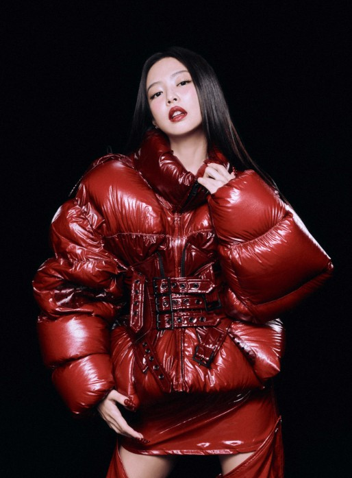

BLACKPINK'S Origin...
Blackpink is a K-pop girl group consisting of four members; Jisoo, Jennie, Lisa, and Rose. They were formed under the label YG Entertainment. They all had trained for multiple years before debuting, which happened on August 8th, 2016.
LISA's Story:

Lisa is the youngest member of BLACKPINK, born on March 27th, 1997. She is Thai, and became the first non-ethnic Korean trainee in 2011. Her signature color she is known for is yellow! She trained for 5 years, improved her dancing skills, rapping, and stage presence, which she is best known for today. Lisa is proficient in many languages, including Thai, Korean, and English. She even knows Japanese and Chinese! After being with BLACKPINK for a few years, she made her solo debut with her song LALISA, which was the most viewed music video from a soloist in 24 hours. Later, she released MONEY, which reached 1 billion views on YouTube. She holds eight Guiness World Records, including being the most followed Kpop artist on Instagram, with over 106 MILLION followers! Later, she started her own company LLOUD where she worked on and produced her first full-length solo album Alter Ego. She is also the global brand ambassador for luxury brands like Celine, Louis Vuitton, and Bulgari. She even acted in HBO series The White Lotus. I could go on and on about her achievements!
JENNIE's Story:

Jennie is the second to oldest member of BLACKPINK, and she was born on January 16th 1996. She studied in New Zealand till she was 8 years old, and then she moved to Korea. Because of that, she is fluent in Korean, and English. She trained under YG for the longest amount of time, for 6 years! She is known for her rapping, singing, stage presence, and fashion influence. She was the first member to release solo music, with her song "Solo". It quickly reached 1 BILLION views on YouTube, reaching huge popularity and success. Later, she left YG for her solo music and started her own label Odd Atelier. She released her first full-length solo album called Ruby, with one of her very influential songs being "Like Jennie". She also acted in the HBO series "The Idol". She has achieved many milestones like being the first Kpop female soloist on the Billboard Hot 100, and RIAA Platinum certification. She has two dogs named Kuma and Kai, and she also loves photography. She is the global brand ambassador for Chanel, and even earned the nickname "Human Chanel" for her fashion influence. Like all the other members, she has achieved a LOT!
JISOO's Story:

Jisoo is the oldest member of BLACKPINK, born on Jan 3rd, 1995. Jisoo's signature color is purple, which represents her regality. She joined YG Entertainment as a trainee in 2011, and trained for 5 years until her debut with BLACKPINK in 2016. She is mainly known in the group for her vocals, visuals, and good natured personality. After being with the group for a while, she made her solo debut with her song "Flower", which broke many records, including making her the first female Kpop soloist to sell over 1 million copies of her album. She is also a global brand ambassador for many luxury brands like Dior, Cartier, and Alo, and she earned the nickname "Dior's Princess". In 2024, she established her own label, BLISSOO, where she produced her first full length solo album, AMORTAGE. She also has a long acting history, acting in four K-dramas to now. Jisoo also has a Maltese dog, named Dalgom. Like all the other members, she has achieved a lot throughout her career and has much more to go!
ROSÉ's Story:

Rosé is the second to youngest in the group, born on February 11th, 1997. Rosé's signature color is blonde, since she rocks that color for her hair. She was born in New Zealand and moved to Austrailia when she was 7. She is Korean and Austrailian, making her fluent in Korean and English. In 2012, she joined YG entertainment, training for the shortest amount of time among other members, four years. She made her solo debut in 2021, with "On the Ground", which broke many records. In 2024, she signed with THEBLACKLABEL for her solo activites, and released one of her VERY famous songs APT with Bruno Mars. The song reached 2 BILLION views on YouTube and gained insane popularity. She is the first artist to reach number one on a Billboard Global chart, as a soloist and group member. One of her nicknames is "Golden Voice", for her commendable vocal skills. She can play both the guitar and piano, both of which she uses when she performs. Despite being a leftie, she plays the guitar with her right hand! She also has a dog named Hank. Additionally, she was the first female Kpop idol to attend the Met Gala in 2021. Additionally, like the other members, she is a global brand ambassador for luxury brands like YSL, Tiffany & Co., and more.